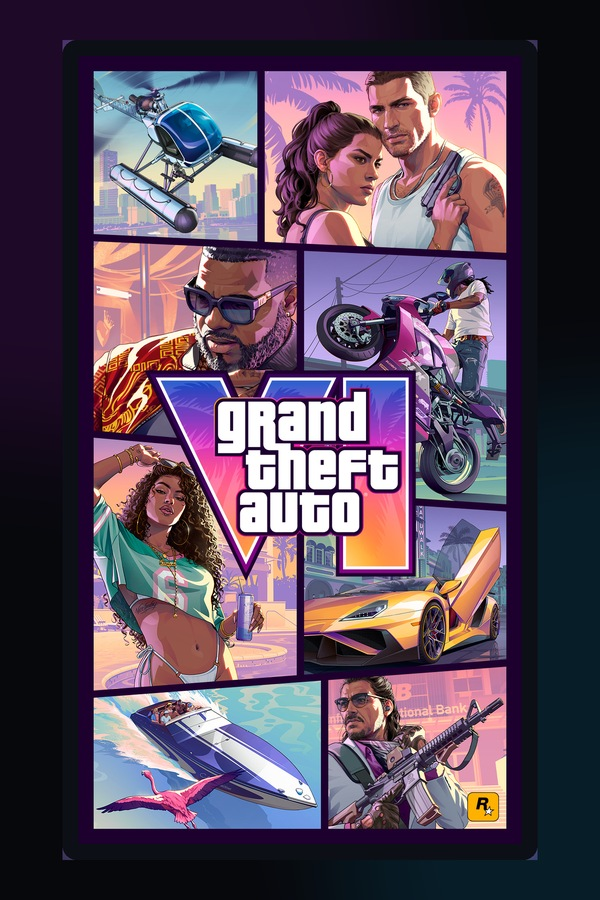

Il precaricamento di GTA 6: quando si scarica

Artwork © Rockstar Games
· Redazione BENDREX
GTA 6 è disponibile da oggi, 19 novembre 2026, su PS5 e Xbox Series X|S. Lo sblocco è avvenuto a mezzanotte locale: in Italia, quindi, alle 00:00 del 19. Il precaricamento è partito il 10 novembre e per chi ha preordinato il download è già completo. Serve il preordine digitale oppure il codice della confezione attivato.
Orari del precaricamento
Su PS5 il download è partito alla mezzanotte locale del 10 novembre, quindi in Italia alle 00:00 del 10. Su Xbox è partito alla mezzanotte GMT (00:00) del 10 novembre, che in Italia erano le 01:00. Due orari diversi per lo stesso giorno: chi ha entrambe le console ha potuto iniziare prima su PlayStation.
Lo sblocco del gioco è avvenuto a mezzanotte locale del 19 novembre in entrambi i casi. Per chi ha preordinato, il download doveva essere finito prima; chi compra oggi in digitale scarica subito e gioca appena il download termina.
Quanto spazio serve
L'unico dato ufficiale sulla dimensione è «fino a 212 GB secondo il dispositivo». Non esistono cifre per singola piattaforma: non sappiamo quanto occupi su PS5 e quanto su Xbox Series X|S.
Prima di avviare il download conviene liberare spazio con margine: il dato dei 212 GB è un massimo, non una misura esatta, e la console ha bisogno di spazio anche per i dati di sistema. Se lo spazio è al limite, il download si ferma.
Differenze tra PS5 e Xbox
Gli orari sono stati il primo punto: mezzanotte locale su PlayStation, mezzanotte GMT su Xbox. Il secondo è la regione dei codici: quelli PlayStation sono legati al paese dell'account (l'Italia rientra nel gruppo EMEA), quelli Xbox non sono bloccati per regione.
Le edizioni sono le stesse su entrambe: Standard e Ultimate, con l'upgrade alla Ultimate acquistabile a parte. La versione fisica non esiste per la Ultimate.
Prezzi rilevati il 19 novembre 2026: su PS Store Italia la Standard costa 79,99 € e la Ultimate 99,99 €, mentre l'upgrade alla Ultimate risulta non disponibile. Su Microsoft Store Italia la Standard costa 79,99 €, la Ultimate 99,99 € e l'upgrade 20,00 €.
La confezione fisica
La scatola non contiene un disco: dentro c'è un codice di download. È in negozio dal 12 novembre e il codice si può riscattare subito, così anche chi ha la versione fisica ha potuto precaricare. Chi compra il codice in un paese diverso da quello dell'account può avere problemi di attivazione: meglio acquistare dove è registrato l'account.
Cosa fare se il precaricamento non parte
Quattro controlli, in ordine. Prima lo spazio libero sufficiente per il download. Poi lascia la console in riposo, così il download continua. Se si blocca, metti in pausa e riprendi. Infine controlla che l'acquisto risulti registrato sull'account. Se il download resta fermo dopo questi passaggi, meglio sentire l'assistenza della console.
Dove acquistare
Trasparenza: questo articolo contiene un link di affiliazione al programma G2A Goldmine. Se acquisti tramite quel link ricevo una commissione; il prezzo che paghi non cambia.
Prima di acquistare controlla la regione indicata nella scheda del venditore: il codice vale per PS5, non per PC.
Link di affiliazione G2A · per te il prezzo non cambia
Vende un terzo: il codice arriva dal venditore, i tempi dipendono da lui e il prezzo cambia. Dati rilevati il 19 novembre 2026, gioco disponibile dal 19.
Fonti: Rockstar Support — piattaforme, edizioni e versioni (orari di precaricamento, sblocco, confezione fisica e restrizioni di regione, letti il 19/11/2026).
Fonte dimensione: Rockstar Support — requisiti di installazione («fino a 212 GB di spazio disponibile secondo il dispositivo», letto il 19/11/2026).